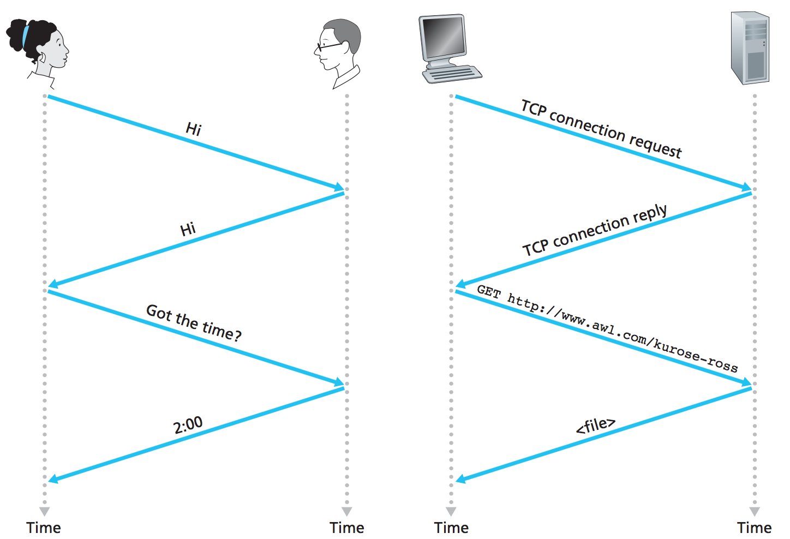
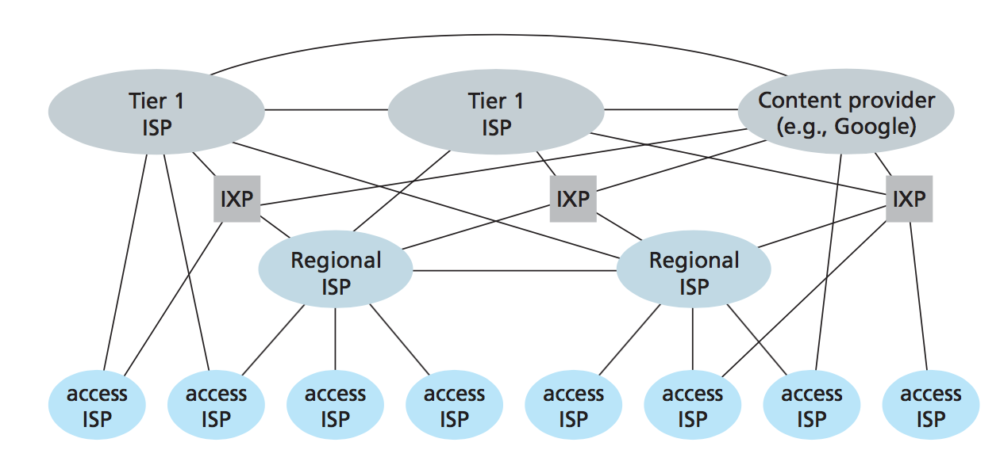
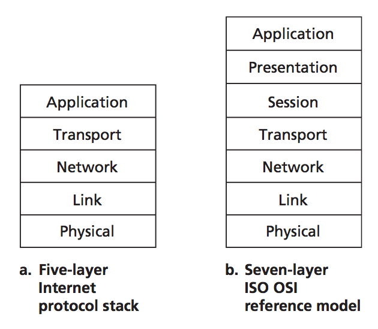
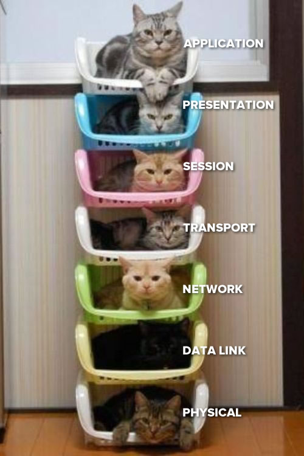
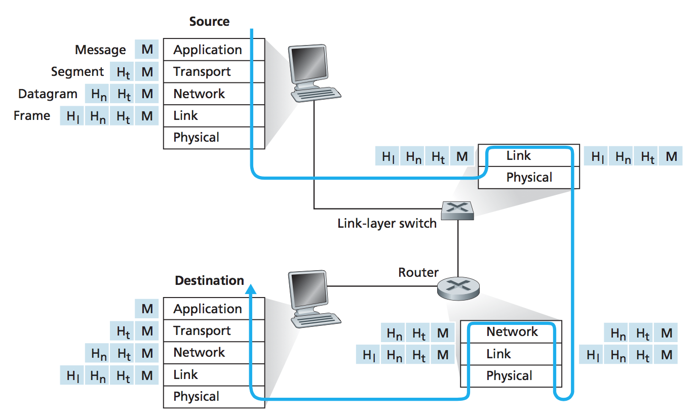

Sistemas Operativos y Redes
Redes de Computadores
Semestre 2022-1
Cristian Ruz - cruz@ing.puc.cl
Departamento de Ciencia de la Computación
Pontificia Universidad Católica de Chile
Introducción
Permitir que un proceso se comunique con otro
- ¿Dónde se encuentra el otro proceso?
- Si se encuentra en la misma máquina: pipe, shared memory
- Si no, S.O. debe utilizar el sistema de Entrada/Salida
- ¿Qué medio utilizar para el envío? (Cable, aire, ...)
- ¿Cómo expresar un mensaje en ese medio? Problema Físico
- ¿Cómo se envía información por un medio de red?
- ¿Cómo se transmite el mensaje? ¿Se manda completo?
- ¿A quién se le transmite el mensaje?
- ¿Hay sólo un receptor? ¿lo estoy "gritando" a todos?
- ¿Cómo se encuentra el destinatario?
- Destinatario debe tener una dirección "única"
- ¿Cómo "encaminar" el mensaje?
- El destinatario, ¿está dispuesto a recibir el mensaje?
- Comunicación debe seguir un orden: protocolo
Red de computadores como infraestructura de conexión
Una gran red: internet
- Red como interconexión de redes
- Dispositivos de origen/destino: hosts (nodos)
- Enlaces: transmiten unidades de información
- Dispositivos de intercambio: routers, switches
- Puntos de acceso: modem, access point, cell tower
- Proveedores de acceso: ISP, Internet Service Provider

Red de computadores como infraestructura de conexión
Una gran red: internet
- Unidades de información: paquetes
- Reglas para intercambiar paquetes: protocolos
- Dos protocolos críticos:
- TCP, Transport Control Protocol
- IP, Internet Protocol
- ¿Cómo asegurar que todos sigan el mismo protocolo?
- Se deben acordar estándares (no implementaciones)
- IETF, Internet Engineering Task Force
- Estándares especificado en RFC, Request For Comments
Red de computadores como infraestructura de servicios
Una gran red: internet
- Plataforma para aplicaciones distribuidas
- Procesos que interactúan a través de la red
- Procesos utilizan una API, Application Programming Interface
- API de Internet, permite que el proceso interactúe con la infraestructura
Protocolo: conjunto de reglas
¿Quién inicia la comunicación?
¿Cuándo se inicia la comunicación?
- Orden de mensajes
- Formato de mensajes
- Acciones ante cada mensaje

Hardware de red
Comunicación end-to-end/
Comunicación entre hosts: dispositivos que ejecutan programas
- Algunos hosts actúan como clientes
- Algunos hosts actúan como servidores
Cliente o servidor es un rol que toma un programa
Clientes
- En dispositivos livianos que solicitan servicios.
- Suelen estar en control del usuario.
Servidores
- En dispositivos poderosos que proveen servicios
- Suelen vivir en data centers
Hosts pueden acceder a la red de distintas maneras
Infraestructura para permitir acceder a la red
- DSL
- Cable
- FTTH
- Dial-Up
- Satellite
- Ethernet
- Wi-Fi
- 3G, LTE
DSL: Digital Subscriber Line
- DSL Módem utiliza línea telefónica tradicional
- DSL Módem convierte señal digital a análoga
- DSLAM: DSL Access Multiplexer
- DSLAM reconvierte señal análoga a digital
- DSL Módem puede usar diferentes frecuencias de transmisión
- High-speed downstream, 50kHz - 1MHz
- Medium-speed upstream, 4kHz - 50kHz
- Línea telefónica tradicional, 0Hz - 4kHz
Enlace multiplexa 3 enlaces en uno

DSL: Digital Subscriber Line
Estándares ITU (International Communication Union)
- Enlaces son asimétricos: ADSL
- ADSL. ITU-T G.992.1: 12Mbps downstream, 1.8Mbps upstream
- ADSL2. ITU-T G.992.5: 24Mbps downstream, 2.5Mbps upstream
- VDSL. ITU-T G.993.1: 52Mbps downstream, 16Mbps upstream
- VDSL2. ITU-T G.993.2: 200Mbps sumando downstream y upstream
Cable
Utiliza infraestructura de TV por cable
- Mezcla enlaces de fibra y coaxial: HFC (Hybrid Fiber Coaxial)
- Utiliza cable modem
- Estándares (asimétricos): 42.8Mbps downstream, 30.7Mbps upstream
Medio broadcast compartido (DSL es privado)
- ¿Qué pasa si múltiples usuarios bajan un video al mismo tiempo?
- ¿Qué pasa si múltiples usuarios están navegando en Internet?
Fiber: FTTH
FTTH, Fiber-to-the-Home
- ONT: Optical Network Terminator
- OLT: Optical Line Terminator.
- Conversión de señal óptica-eléctrica
- Estándares desde 1Mbps a 1Gbps
Dial-Up, Satellite
Dial-Up. Enlace a través de línea telefónica.
- Velocidades de 2.4kbps a 56kbps
Enlace satelital para zonas rurales
- 1Mbps
Ethernet
Estándar de conexión por pares trenzados de cobre
- IEEE 802.3
- Velocidades de 10Mbps, 100Mbps, 1Gbps, 10Gbps
- Implementan LAN, Local Area Network
Wi-Fi
Estándar de conexión inalámbrico de corto alcance
- IEEE 802.11
- Velocidades de 54Mbps, 150Mbps, …
- Implementan WLAN, Wireless LAN
Wide area: 3G, 4G, LTE
Estándar de conexión inalámbrico de corto alcance
- IEEE 802.11
- Velocidades de 54Mbps, 150Mbps, …
- Implementan WLAN, Wireless LAN
Medio físico
Permitir que un proceso se comunique con otro
Procesos deben transmitir información
- Información se codifica como bit
- Bits deben viajar a través de un medio
- Bits se transmiten como ondas
- Medios guiados: sólidos, pares trenzados de cobre, cable coaxial, fibra óptica multimodo
- Medios no guiados: inalámbricos, enlace satelital
Par trenzado de cobre
UTP, unshieldad twisted pair
- Cables trenzados se comportan como una antena
- Categorías según cuan trenzados están: 3, 5, 5b, 6, 6a
- Recorren varios kilómetros ($\sim 5$km) sin atenuarse
- 10Mbps a 10Gbps
- Uso para telefonía, ethernet, implementación de LANs

Cable coaxial de cobre
Par concéntrico (no trenzado)
- Alta resistencia al ruido externo
- Ancho de banda depende de la distancia
- Fácil de modificar para insertar nodos nuevos
- Medio compartido

Fibra óptica
Transmisión de pulsos de uz
- Inmune a interferencia electromagnética
- Cables hechos de fibra de vidrio
- Alta velocidad de transferencia
- Baja atenuación con la distancia (más de 100kms)
- Monomodo: un haz de luz
- Multimodo: múltiples haces a distintos ángulos

Medios inalámbricos terrestres
- Señal se debilita en el aire al propagarse
- Interferencia con otras señales: asignación de frecuencias
- Propagación multicamino: señales llegan por distintos caminos

Estándares inalámbricos
IEEE 802.11, Wireless LAN
- Estación base: Access Point (AP)
- BSS: Basic Service Set
- Modos de operación: infrastructure y ad-hoc
IEEE 802.11, Wireless LAN
Canales. Espectro 2.4GHz $\sim$ 2.485GHz dividido en 11 canales
- Administrador de AP elige el canal
- Host escucha canales y detecta beacons enviados por AP
- Beacons contienen SSID (nombre de AP) y MAC Address de AP

Mobile standards

Mobile standards

Funcionamiento de red
Interconexión de hardware para transmisión de datos
Transmisión en un enlace: $L$ bits sobre un enlace de $R$ bits/sec, demora $L/R$
Packet Switching
Dispositivos de red intercambian paquetes
Store-and-forward packet switching
- Dispositivo (router) almacena paquetes (store)
- Router examina paquetes y determina punto de reenvío (forward)
- Router usa tablas de reenvío (forwarding tables)
Packet Switching
Tasa de transmisión determinada por el enlace más lento
- Router puede sufrir congestión
- Si hay $N$ enlaces iguales en la ruta, el tiempo de transmisión de origen a destino (end-to-end delay) es: $d_{\mathit{end-to-end}}=N \times \frac{L}{R}$
Circuit Switching
Establecimiento previo de conexión entre origen-destino
Ancho de banda garantizado durante comunicación
- Enfoque usado por comunicación telefónica
- Sensible a saturación ante conexiones simultáneas
- Enlace de 1Mbps, con 4 conexiones simultáneas, cada una recibe hasta 250kbps
- Si hay $N$ enlaces iguales en la ruta, el tiempo de transmisión de origen a destino (end-to-end delay) es: $d_{\mathit{end-to-end}}=N \times \frac{L}{R}$
Multiplexión en circuit switching
Al usar un medio compartido se deben mantener separadas las comunicaciones
FDM: Frequency-Division Multiplexing
- Banda de frecuencia (ancho de banda) para cada transmisión
TDM: Time-Division Multiplexing
- División por tiempo entre emisores
- Cada emisor tiene un turno para transmitir en todo el ancho de banda
Internet
http://www.submarinecablemap.com/http://www.internetexchangemap.com/
Internet

http://www.submarinecablemap.com/http://www.internetexchangemap.com/
Conceptos de Software
Hardware soluciona la mitad de la tarea
- El mensaje debe llegar a un proceso
- Redes se organizan en base a un modelo de capas
- Capas se comunican usando protocolos
Protocolo: Contrato de comunicación entre distintas partes acerca de la manera en que se producirá la comunicación
Separación de responsabilidades permite modelar e implementar sistemas complejos
Modelo de capas
Una instanciación de este modelo define un stack de protocolos
Modelo de capas
Mensajes pueden ser modificados en cada capa, agregando headers o modificando todo el mensaje.
Servicios
- Capa 3: Mensaje entre personas
- Capa 2: Mensaje entre traductores
- Capa 1: Envío físico (fax)
Modelo de capas
Servicios, protocolos, capas
Servicio: conjunto de primitivas que provee una funcionalidad
Capas proveen servicios a otras capas
Protocolo puede ser cambiado sin afectar al servicio
Modelo OSI
Modelo ISO OSI (Open Systems Interface)
- Propuesto en 1983 por Day y Zimmerman, revisado en 1995
- Modelo de referencia
- Define responsabilidades para cada capa
- No define estándares, ni protocolos, ni implementaciones

Modelo Internet
Originado como stack de protocolos para ARPANET, proyecto de investigación del DoD
- Propuesto por Vinton Cerf y Robert E. Kahn, 1974
- Estandarizado en 1989
- También llamado stack TCP/IP

Capa de Aplicación
Comunicación entre procesos (aplicaciones)
Aplicaciones intercambian mensajes
- HTTP (HyperText Transfer Protocol)
- SMTP (Simple Mail Transfer Protocol)
- FTP (File Transfer Protocol)
- DNS (Domain Name Service)
- IMAP (Internet Message Access Protocol)
- SSH, DHCP, POP, Telnet, XMPP, …
Capas de Presentación y Sesión
Sólo presentes en modelo OSI
Presentación
Codificación, encriptación, serialización
Sesión
Establecimiento de sesión entre aplicaciones.
Authorization, authentication.
En la práctica estas tareas se implementan, de ser necesarias, en la aplicación
Capa de Transporte
Transporte de mensajes entre origen y destino
Mensaje de capa de aplicación se transmite en segmentos
- TCP (Transport Control Protocol)
- Servicio connection-oriented/
- Garantías de entrega (reliable)
- Control de flujo
- Control de congestión
- UDP (User Datagram Protocol)
- Servicio connection-less/
- Sin garantías de entrega
Capa de Red
Transporte de segmentos entre par de hosts
Segmentos se transmiten en forma datagramas (paquetes)
- Servicio de entrega desde origen a destino
- Búsqueda de destino en la red
- Encaminamiento (routing) de segmento
- IP (Internet Protocol)
- Implementado en origen, destino, y nodos intermedios
- Hardware: router
- IPv4, IPv6
- ICMP (Internet Control Message Protocol)
- Mensaje de control (ping, trace, echo)
- IGMP, OSPF
- Protocolos entre routers
Capa de Enlace (link)
Transmisión de paquetes en cada enlace
Paquetes se transmiten en cada par de hosts de acuerdo a las características del enlace
Paquetes de capa de enlace se conoce como frames
- Pueden proveer transmisión confiable (reliability)
- Pueden proveer control de errores
- Control de acceso al medio, Medium Access Control (MAC)
- Ethernet, IEEE 802.3
- Wi-Fi, IEEE 802.11
- Hardware: switch, hub
Capa Física
Transmisión de frames en cada enlace
Transmisión de bits a través de un medio
Protocolos para cada medio de transmisión
- UTP (par trenzado de cobre)
- Cable coaxial
- Fibra óptica
- Medio inalámbrico
Encapsulamiento

Funcionamiento del modelo de capas se basa en encapsulamiento de mensajes
- Capas agregan y remueven encabezados (headers)